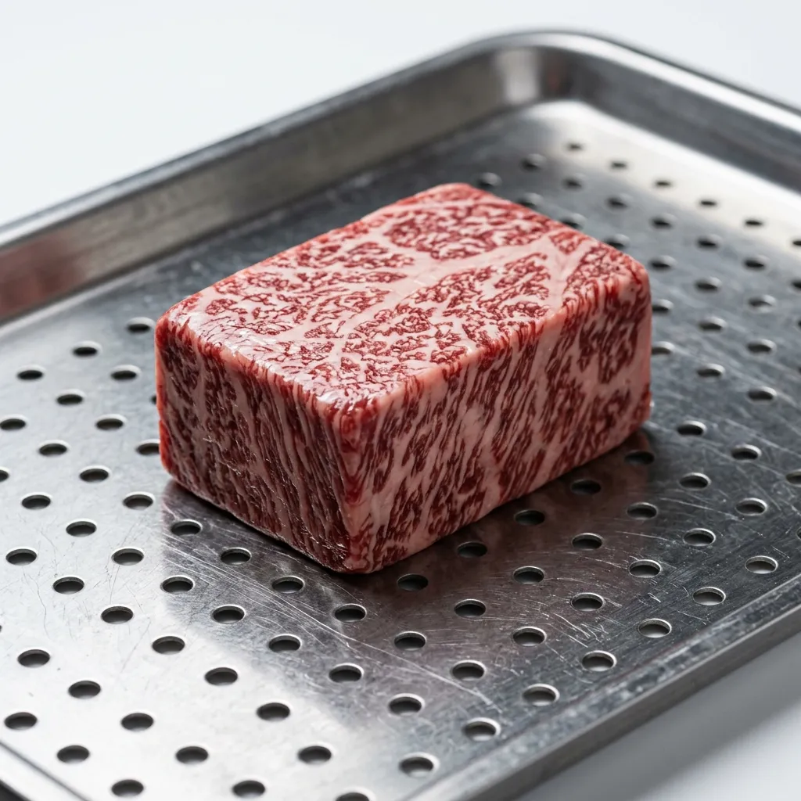

Aseptic Cellars
Aseptic Cellars
Protein Isolates
The raw materials processed at Aseptic Cellars are classified as clinical isolates, definitively separated from standard butcher cuts. Our inventory represents highly regulated, precision-desiccated tissue blocks, intended solely for molecular gastronomy and scientific culinary application. Each isolate is tracked by its exact moisture loss coefficient and acoustic frequency cycle.

120-Day Acoustic Wagyu Isolate
Our flagship product is the 120-Day Acoustic Wagyu Isolate. Through sustained subjection to 40 kHz ultrasonic waves in a total vacuum, the Wagyu tissue achieves a precise 42% moisture reduction. This acoustic cavitation forces water out of the cellular matrix while leaving the intramuscular fat cells completely intact. Consequently, the marbling density post-desiccation is profoundly concentrated, fundamentally altering the lipid-to-protein ratio of the original cut.
Because the process is entirely sterile and free from oxidative breakdown, the fat remains brilliantly white and structurally sound, rather than yellowing or turning rancid as it would in traditional aging. The resulting Wagyu isolate offers chefs a hyper-concentrated umami profile and a dramatically lowered melting point, requiring exact thermal calibration during preparation.
Request AllocationResonant Marine Proteins
Processing pelagic fish presents unique challenges due to the rapid degradation of marine lipids. Our resonant marine proteins, focusing primarily on bluefin tuna blocks, utilize a specialized acoustic curing protocol. Operating at a modified 25 kHz frequency within the UV-C irradiated vacuum chambers, we extract moisture from the tuna without rupturing the delicate lipid structures.
Atmospheric dry-aging of fish often introduces erratic histamine development and unwanted bacterial colonization. The Aseptic Cellars methodology bypasses this entirely, safely reducing the water weight of the marine tissue by 28%. The outcome is a sterile, dramatically firmed tuna block that retains its complex oceanic fats while eliminating the flaccidity of the raw muscle, providing sashimi chefs with a structurally flawless and flavour-dense isolate.
Request AllocationSterile Avian Cultures
Traditional maturation of poultry is severely restricted by the inherent biological risks of campylobacter and salmonella. Our sterile avian cultures remove this hazard completely. By processing premium poultry within our ISO 7 cleanroom and bombarding the tissue with continuous 254 nm UV-C radiation, we achieve total eradication of all surface pathogens before they can multiply.
Simultaneously, the acoustic desiccation extracts internal moisture, concentrating the typically subtle flavour profile of the avian muscle. This dual-action protocol allows for the extended, 45-day aging of poultry—a timeframe that is biologically impossible in standard atmospheric conditions. The resulting sterile avian isolate features remarkably dense flesh and completely desiccated skin, guaranteeing an unparalleled crispness upon thermal application while remaining medically safe for consumption.
Request Allocation